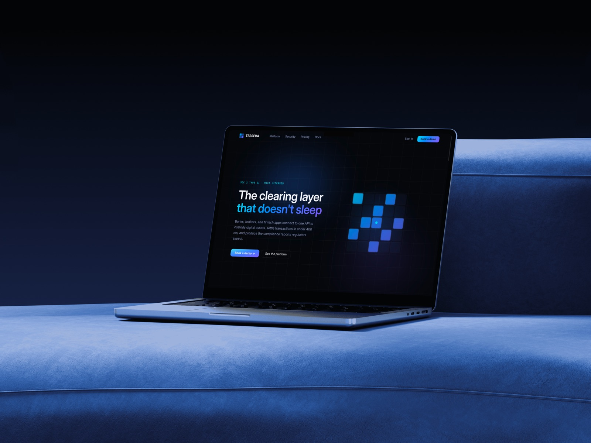
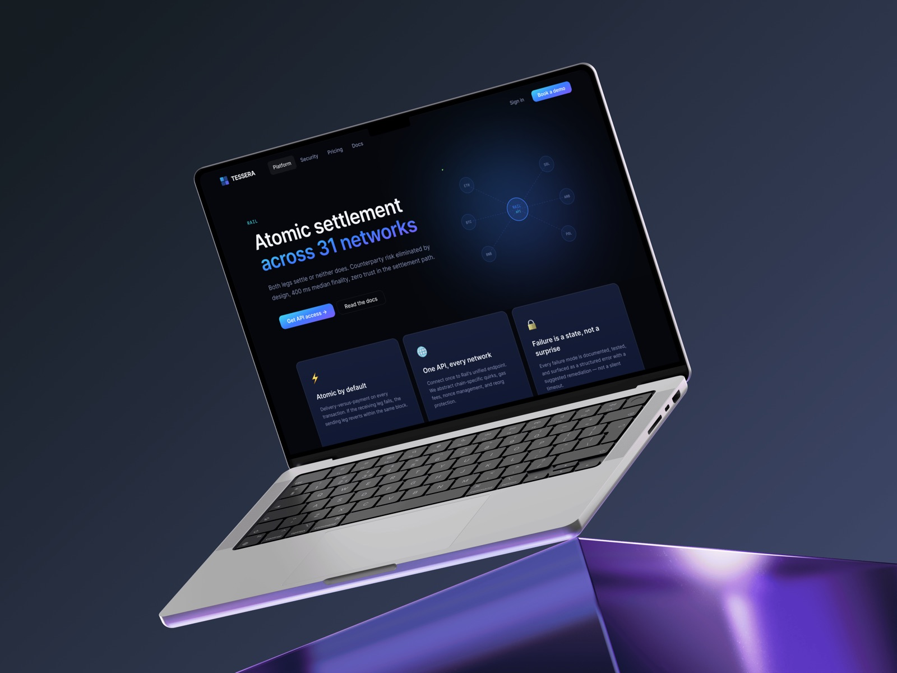
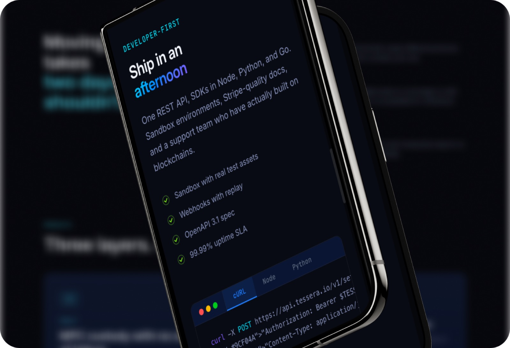
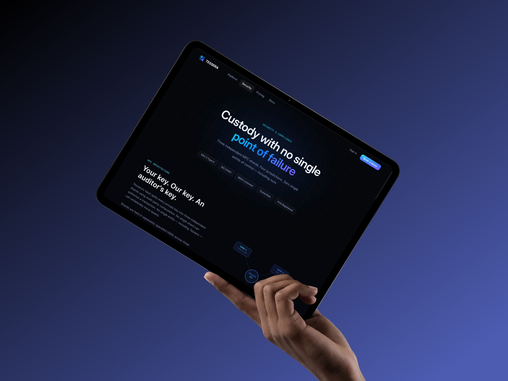

Tessera — Fleet management platform
Tessera clears and settles tokenized assets for banks. Nothing about the product is visible — no app, no dashboard, just an API and a promise. The website had to make that promise legible to three very different readers in one scroll.

About the project
What the product is and what I was solving
Context
A four-page site built to survive a due-diligence read — an engineer, a risk officer and a compliance lead evaluating the same company from the same scroll, each looking for a different kind of proof.
Problem
An invisible product with no UI to show, sold to buyers who arrive skeptical rather than curious. Adjectives do not survive that room.
My role
I created one narrative arc across four pages, each claim tied to an artifact — a diagram, a code block, a table, a number with a unit.
- Role
- Product designer
- Timeline
- 3 months, 2025
- Platform
- Web app, desktop-first
- Tools
- Figma, Blender, Spline
Selected screens



See the full case on Behance
Full process, research and the rest of the screens.
behance.net/elizaemg